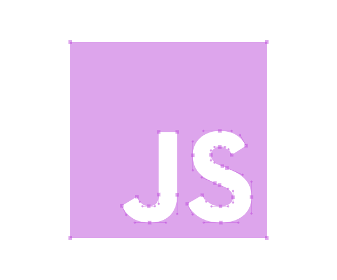

Mijn naam is Jermo Barbereaux Swaab, geboren en getogen in Prinsenbeek en momenteel woonachtig in Amstelveen. Op dit moment studeer ik om applicatieontwikkelaar te worden. Dit doe ik te ROC van Amsterdam: College Amstelland. Het ontwikkelen van applicaties en het leren van dit vak is langzaam maar zeker ontwikkelt in een passie!
Mijn interessen zijn vrij breed, ik houd van gamen, computers bouwen, dansen, gadgets, coderen en het live streamen van gameplay (podcasten).

Dit project is aangeleverd door school, het doel van de opdracht was om een website te maken zodat men tablets kan tablets te vergelijken.
bekijk projectHier vind je mijn CV waarin mijn genoten opleidingen en werkervaring wordt weergegeven.
Bekijk CV